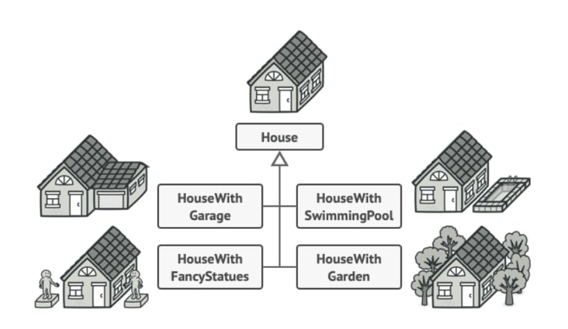
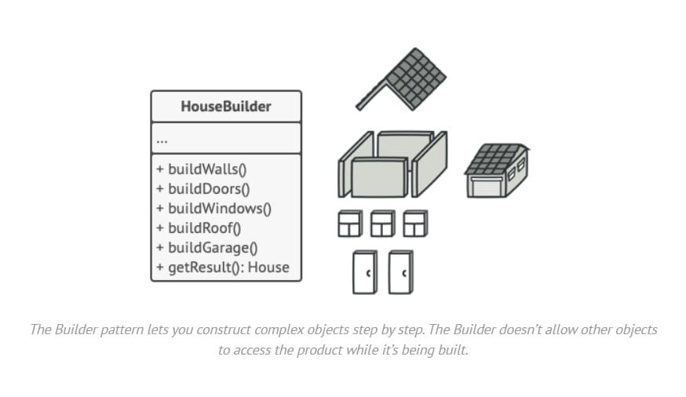

Welcome to Quick Quiz! Our goal is to create enjoyable quizzes that enhance the learning experience. We have designed our platform with modern web principles, ensuring it is user-friendly and accessible.
The Builder Design Pattern is a programming technique that allows for the step-by-step construction of complex objects. This approach enables us to customize and adapt the creation process instead of relying on a single method.
At Quick Quiz, we implement the Builder Design Pattern to create quizzes that are flexible and tailored to each user.
To provide a platform that makes learning fun and accessible through quizzes.
Users can pick their quiz details, like category and difficulty. This lets everyone create a quiz they enjoy.
The pattern breaks down the quiz creation process into simple steps, making it easier for users to understand what to do next.
The pattern helps guide users through the quiz setup steps, making it easy and fun to get started.
Making a complex object needs many steps, and these steps are often hidden in a big instruction list or all over the code.
The Builder pattern organizes object creation by using smaller helpers called builders instead of one big instruction manual.
Web Developer | UI Designer
UX Designer